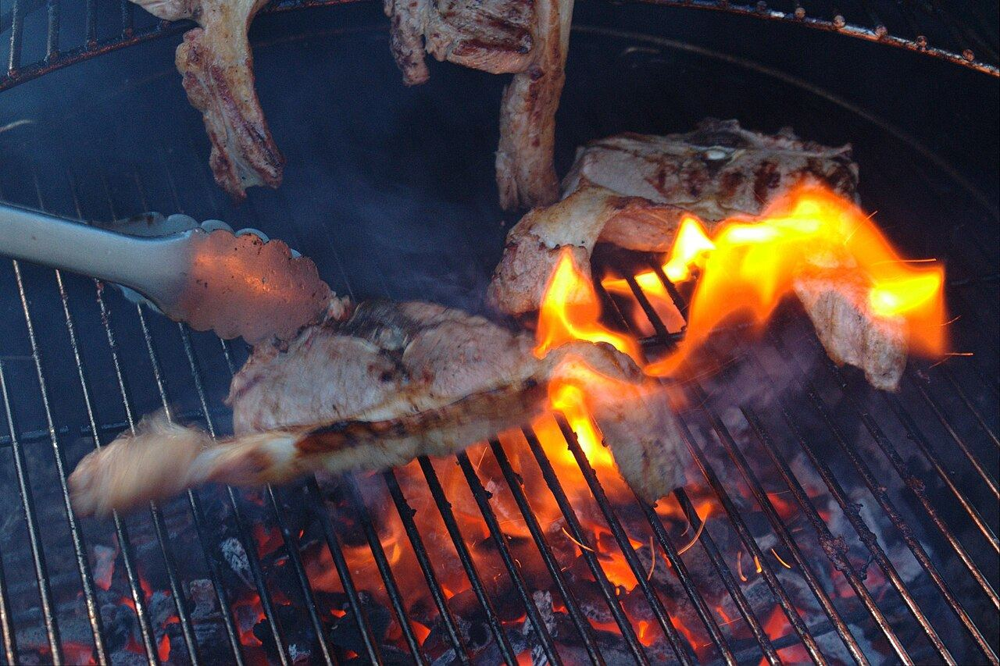
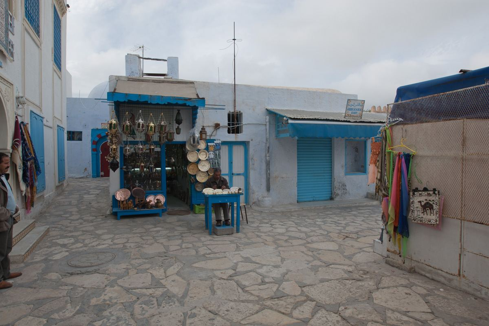
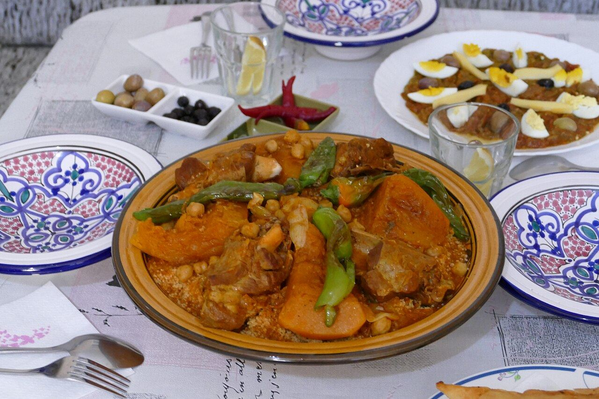

Côtelettes grillées
Agneau grillé au charbon.
Avis clients— DT à confirmer

Côtelettes grillées, brick au thon, kemia offerte et couscous : l’adresse populaire de Hammamet, notée 4,4/5 sur Google par plus de 800 clients.
Au centre de Hammamet, Ettahrir est réputé pour sa cuisine tunisienne simple et copieuse, servie en salle ou en terrasse.
Cités dans les avis : côtelettes d’agneau, merguez, brick au thon, kemia (petites entrées) offerte, loubia, poisson frit, couscous. Prix à confirmer.

Couscous et plats mijotés du jour affichés en ligne.
Pour les habitués comme pour les touristes.
La demande de table arrive pré-remplie ; vous confirmez quand vous êtes disponible.
Horaires, accès, plats du jour : les questions fréquentes répondues même en plein service.
Aujourd’hui, on vous joint uniquement par téléphone. Ici, vos clients envoient leur demande en 1 minute, et vous confirmez quand vous êtes disponible.
Notes publiques uniquement, avec leur source. Aucun avis n'a été inventé ni copié pour cette démo.
Hammamet, entre médina et remparts. photos d'ambiance sous licence libre — à remplacer par vos photos
Au centre de Hammamet, à quelques minutes de la médina.
| Lundi – Dimanche | 12:00 – 00:00 |